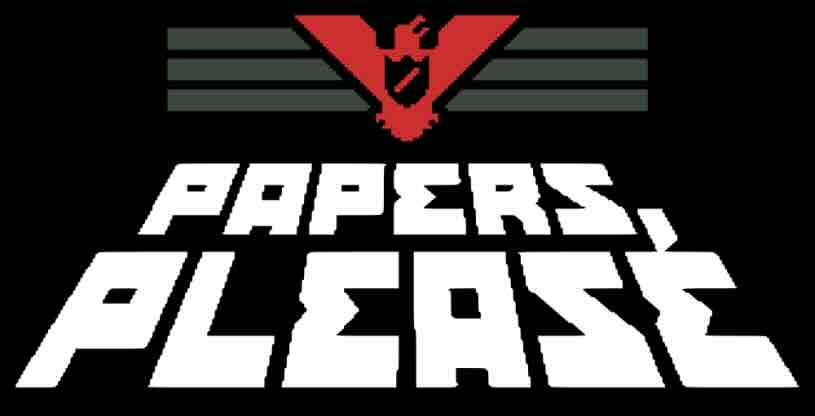

Gabor Brody
Welcome to my homepage... Thanks for stopping by!!! @>-+-
I am a Research Scientist and Lecturer at Yale University
affiliated with the
Department of Psychology (primary)
Department of Linguistics (by courtesy)
Program in Cognitive Science
|
My work explores infants' and children's (and adults) ability to keep track of and communicate about objects, concepts, and agents. I also enjoy working on a variety of questions having to do with the relationship between 'meaning' and psychology. I am a sucker for the belief that minds are not big uniform blobs.
Before Yale I was a postdoctoral researcher at the Brown Language and Thought Lab working with Roman Feiman. I defended my dissertation in 2020 at the Cogntive Development Center of Central European University advised by Gergely Csibra and Agnes Melinda Kovacs. During my Phd I also did research visits at the Harvard Lab for Developmental Studies and at RICO (Universitat Pompeu Fabra). I obtained my Masters and Bachelors degrees at ELTE in Budapest, Hungary. mail [at] gaborbrody.com |
You can download my CV here.

|  | EXCLUSIVELY for my fellow Scientists and Researchers!! |
| In the pipeline |
 Revencu, B., Pomiechowska, B., Brody, G., & Csibra, G. (under review). Infants accept arbitrary objects as ad-hoc symbols. Brody, G., Mazalik, P., & Feiman, R. (under review). Object perception encodes mutually exclusive possibilities. Revencu, B., Pomiechowska, B., Brody, G., & Csibra, G. (under review). Infants accept arbitrary objects as ad-hoc symbols. Brody, G., Mazalik, P., & Feiman, R. (under review). Object perception encodes mutually exclusive possibilities. |
| Publications |
|
|
Dissertation |
| Brody, G. (2020). Indexing Objects in Vision and Communication [Doctoral dissertation, Central European University]. CEU Academic Repository. (link) |

|
|
© 2024 Gabor Brody. Design and inspo from Travis Latke's Galaxy Quest page